ICST Ambi Reaper – User-ManualICST Ambi Reaper – User Manual
Mit 18 Buttons baust du in REAPER eine komplette Ambisonics-Kette (Encoder, Reverb, Decoder, Binaural) und bereitest Regionen, Encoder-Spuren und Bewegung für den Animator Choreographer vor.With 18 buttons you build a complete Ambisonics chain in REAPER (encoder, reverb, decoder, binaural) and prepare regions, encoder tracks and motion for the Animator Choreographer.
▶ Demo-Video (DE)▶ Demo video (EN)
1. Überblick: die Toolbar1. Overview: the toolbar
Die Toolbar ICST_Ambi_Automation hat Buttons in vier Gruppen: Spuren anlegen (1–8), Routing (9), Bewegung (10–12) und Animator (13–17). Button 18 öffnet diese Dokumentation.The toolbar ICST_Ambi_Automation has buttons in four groups: create tracks (1–8), routing (9), motion (10–12) and Animator (13–17). Button 18 opens this documentation.
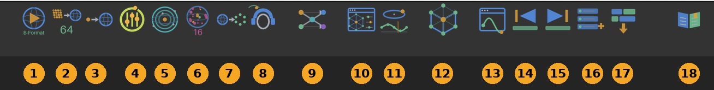
| Nr.No. | ButtonButton | FunktionFunction |
|---|---|---|
| 1 | B-Format PlayerB-Format Player | Spur für eine B-Format-Datei (1., 3., 5. oder 7. Ordnung)Track for a B-format file (order 1, 3, 5 or 7) |
| 2 | Encoder 64Encoder 64 | Spur mit AmbiEncoder_64Track with AmbiEncoder_64 |
| 3 | EncoderEncoder | AmbiEncoder (1 Kanal) auf gewählte Spuren oder neue SpurAmbiEncoder (1 channel) on selected tracks or a new track |
| 4 | HOA FXHOA FX | Spur mit IEM-Effekten (SceneRotator, MultiEQ, FdnReverb, DualDelay …)Track with IEM effects (SceneRotator, MultiEQ, FdnReverb, DualDelay …) |
| 5 | HOA ReverbHOA Reverb | Spur HOA_Reverb mit AmbiIRVerbTrack HOA_Reverb with AmbiIRVerb |
| 6 | AmbiGran 16AmbiGran 16 | Neue Spur AmbiGran_16 (immer 16 Kanäle)New track AmbiGran_16 (always 16 channels) |
| 7 | DecoderDecoder | Spur mit AmbiDecoderTrack with AmbiDecoder |
| 8 | BinauralBinaural | Spur mit IEM BinauralDecoder (bis 7. Ordnung), sonst dearVR AMBI MICRO (16 Kanäle) bzw. Ersatz-DecoderTrack with the IEM BinauralDecoder (up to 7th order), otherwise dearVR AMBI MICRO (16 channels) or a substitute decoder |
| 9 | Auto-RouteAuto-Route | Erkennt alle Spuren und legt die SendsDetects all tracks and creates the sends |
| 10 | Motion Map GUIMotion Map GUI | Bewegungsform pro Quelle wählen und Automation schreibenChoose a motion shape per source and write automation |
| 11 | Spat Motion AutomationSpat Motion Automation | Schreibt XYZ-Automation in die ZeitauswahlWrites XYZ automation into the time selection |
| 12 | Kristall Motion MapKristall Motion Map | Kristallgitter-Bewegung mit OSCCrystal-lattice motion via OSC |
| 13 | Animator öffnenOpen Animator | Startet den Animator ChoreographerStarts the Animator Choreographer |
| 14 | Vorherige RegionPrevious Region | Cursor zum Anfang der vorherigen RegionCursor to the start of the previous region |
| 15 | Nächste RegionNext Region | Cursor zum Anfang der nächsten RegionCursor to the start of the next region |
| 16 | Encoder-SpurenEncoder Tracks | Legt Encoder_01 … an (Anzahl und Ordnung wählbar)Creates Encoder_01 … (count and order selectable) |
| 17 | CSV-ExportCSV Export | Exportiert Regionen und Marker als CSV für die AppExports regions and markers as CSV for the app |
| 18 | DokumentationDocumentation | Öffnet diese DokumentationOpens this documentation |
Jede Spurart hat eine feste Farbe: Encoder orange, Reverb türkis, Decoder blau, Binaural violett, B-Format-Player grün, AmbiGran pink.Every track type has a fixed color: encoder orange, reverb teal, decoder blue, binaural purple, B-format player green, AmbiGran pink.
2. Start2. Start
Der Ordner ICST_Ambi_Reaper ist ein portabler REAPER-Ordner mit REAPER, allen Scripts, Icons und den ICST-Plugins.The folder ICST_Ambi_Reaper is a portable REAPER folder with REAPER, all scripts, icons and the ICST plugins.
- Starte
REAPER.appaus dem OrdnerICST_Ambi_Reaper. Sonst findet REAPER die Toolbar und die Scripts nicht.StartREAPER.appfrom theICST_Ambi_Reaperfolder. Otherwise REAPER will not find the toolbar and the scripts. - Die Toolbar ICST_Ambi_Automation ist beim Start bereits geladen.The toolbar ICST_Ambi_Automation is already loaded at startup.
- Die Plugins liegen als VST3 in
Effects/VST3, der Pfad ist inreaper.inieingetragen. Es werden nur VST3-Plugins benutzt, kein AU.The plugins are VST3 inEffects/VST3; the path is set inreaper.ini. Only VST3 plugins are used, no AU. - Fehlt ein Plugin, meldet das Script den Namen. Dann unter Optionen > Einstellungen > Plug-ins > VST neu scannen.If a plugin is missing, the script reports its name. Then rescan under Options > Preferences > Plug-ins > VST.
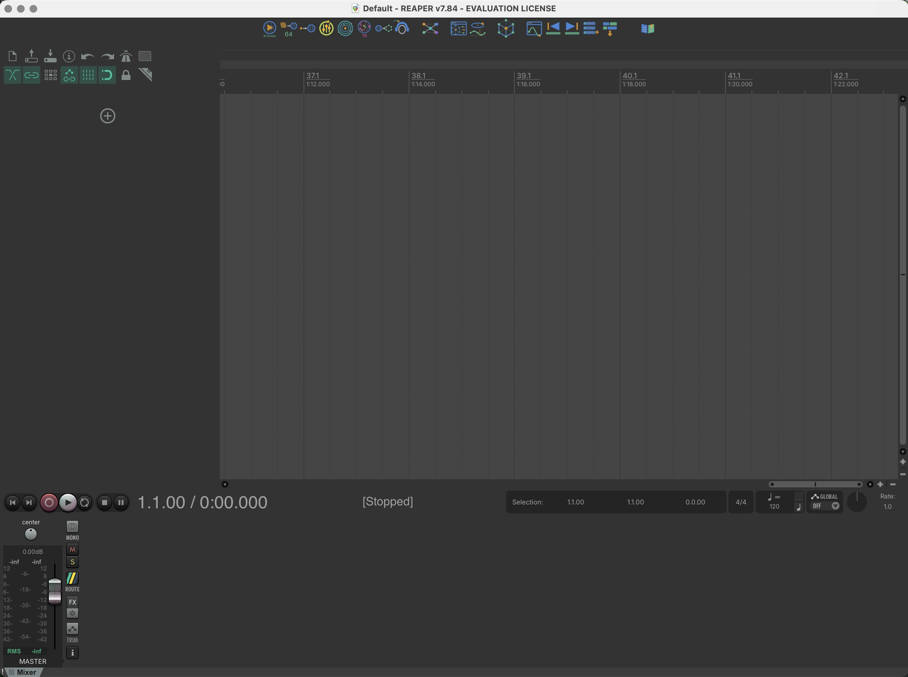
Animator Choreographer installierenInstall the Animator Choreographer
- Die App liegt im Ordner
Animator(Animator/Animator Choreographer.app). Button 13 startet sie von dort, sonst sucht er eine installierte App. Unter Windows sucht erAnimator\Animator Choreographer.exeim REAPER-Ordner, dann die installierte App (%LOCALAPPDATA%\Programs\Animator ChoreographeroderC:\Program Files\Animator Choreographer); die Windows-Version wird mitAnimatorChoreographer-<Version>-Setup.exeinstalliert.The app is in theAnimatorfolder (Animator/Animator Choreographer.app). Button 13 starts it from there, otherwise it looks for an installed app. On Windows it looks forAnimator\Animator Choreographer.exein the REAPER folder, then for the installed app (%LOCALAPPDATA%\Programs\Animator ChoreographerorC:\Program Files\Animator Choreographer); the Windows version is installed withAnimatorChoreographer-<version>-Setup.exe. - Voraussetzung: macOS 11 oder neuer. Die App läuft auf Apple Silicon und Intel. Das Plugin AmbiGran 16 sowie die REAPER-Erweiterungen in
UserPluginssind nur für Apple Silicon (arm64) gebaut; auf Intel-Macs fehlen sie.Requirements: macOS 11 or newer. The app runs on Apple Silicon and Intel. The plugin AmbiGran 16 and the REAPER extensions inUserPluginsare built for Apple Silicon (arm64) only; they are missing on Intel Macs. - Nach dem Download einmal
run-me-before-install.commandper Rechtsklick > Öffnen starten. Es entfernt die macOS-Quarantäne für den ganzen Ordner und setzt den Plugin-Pfad inreaper.iniauf den aktuellen Speicherort. Nach dem Verschieben des Ordners erneut ausführen. DanachREAPER.appstarten.After downloading, runrun-me-before-install.commandonce with right-click > Open. It removes the macOS quarantine flag for the whole folder and points the plugin path inreaper.inito the current location. Run it again after moving the folder. Then startREAPER.app. - Warnt macOS trotzdem beim ersten Start der App: Rechtsklick auf die App > Öffnen.If macOS still warns when the app starts for the first time: right-click the app > Open.
3. Ambisonics-Spuren anlegen (Buttons 1–8)3. Create Ambisonics tracks (buttons 1–8)
Jeder Button legt eine fertige, farbige Spur mit dem passenden VST3-Plugin an. Die meisten fragen vorher die Ordnung ab.Each button creates a ready-made colored track with the matching VST3 plugin. Most of them ask for the order first.
Ordnung wählenChoose the order
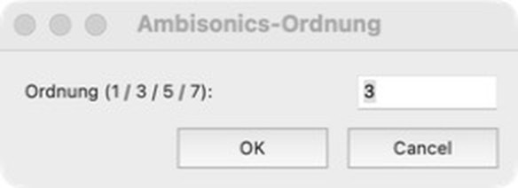
| OrdnungOrder | KanäleChannels |
|---|---|
| 1 | 4 |
| 3 | 16 |
| 5 | 36 |
| 7 | 64 |
Standard ist 3 (16 Kanäle). Das Script merkt sich deine letzte Wahl.The default is 3 (16 channels). The script remembers your last choice.
Schritt für SchrittStep by step
- Klicke Encoder 64 (Button 2), wähle die Ordnung, OK. Es entsteht die orange Spur
Ambi_Encoder_64.Click Encoder 64 (button 2), choose the order, OK. You get the orange trackAmbi_Encoder_64. - Klicke HOA Reverb (Button 5): türkise Spur
HOA_Reverbmit AmbiIRVerb. Ihr Master-Send ist aus, das Signal läuft über den Decoder.Click HOA Reverb (button 5): teal trackHOA_Reverbwith AmbiIRVerb. Its master send is off; the signal goes through the decoder. - Klicke Decoder (Button 7): blaue Spur
Ambi_Decoder.Click Decoder (button 7): blue trackAmbi_Decoder. - Klicke Binaural (Button 8): violette Spur
Binaural_Monitormit dem IEM BinauralDecoder (liegt im Paket). Ist er nicht installiert, nimmt das Script dearVR AMBI MICRO.Click Binaural (button 8): purple trackBinaural_Monitorwith the IEM BinauralDecoder (included in the package). If it is not installed, the script uses dearVR AMBI MICRO.
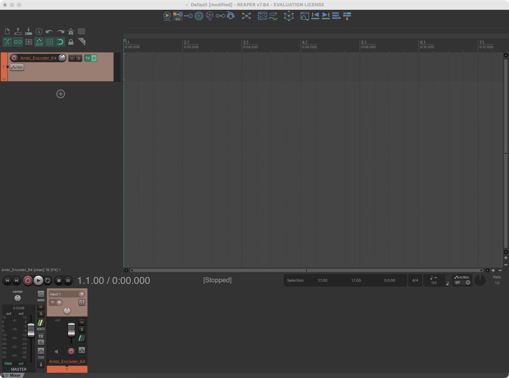
Weitere SpurenMore tracks
- B-Format Player (Button 1): Spur
BFormat_Player_<n>OA. Du wählst Ordnung und Datei. Passt die Kanalzahl nicht, erscheint eine Warnung.B-Format Player (button 1): trackBFormat_Player_<n>OA. You choose order and file. A warning appears if the channel count does not match. - AmbiGran 16 (Button 6): legt immer eine neue Spur
AmbiGran_16an, fest 16 Kanäle, keine Ordnungsabfrage.AmbiGran 16 (button 6): always creates a new trackAmbiGran_16, fixed 16 channels, no order prompt. - Encoder (Button 3): setzt AmbiEncoder auf die gewählten Spuren, sonst entsteht eine neue.Encoder (button 3): puts AmbiEncoder on the selected tracks, otherwise a new one is created.
HOA FX: Spur mit IEM-Effekten (Button 4)HOA FX: track with IEM effects (button 4)
- Klicke HOA FX (Button 4) und gib die Ordnung ein.Click HOA FX (button 4) and enter the order.
- Im Menü die gewünschten Effekte anklicken: SceneRotator, MultiEQ, FdnReverb, DualDelay, GranularEncoder, die Kompressoren, EnergyVisualizer und ToolBox. Ein Haken zeigt die Auswahl, die Zahl in eckigen Klammern die Position in der Kette. Die Reihenfolge deiner Klicks ist die Reihenfolge der Effekte. Die Presets oben füllen die Auswahl mit einem Klick.In the menu click the effects you want: SceneRotator, MultiEQ, FdnReverb, DualDelay, GranularEncoder, the compressors, EnergyVisualizer and ToolBox. A check mark shows the selection, the number in square brackets the position in the chain. The order of your clicks is the order of the effects. The presets at the top fill the selection with one click.
- Spur anlegen wählen: Es entsteht die gelbgrüne Spur
HOA_FXmit den Effekten. Das Script merkt sich deine letzte Auswahl.Choose Spur anlegen (create track): you get the yellow-green trackHOA_FXwith the effects. The script remembers your last selection. - Danach Auto-Route (Button 9) klicken: Die Spur wird wie ein Reverb zwischen Quellen und Decoder/Binaural gelegt.Then click Auto-Route (button 9): the track is placed like a reverb between the sources and the decoder/binaural.
- Die Effekte stammen aus der IEM Plug-in Suite (GPLv3,
plugins.iem.at) und liegen inEffects/VST3. Die Spur hat (Ordnung+1)² Kanäle.The effects come from the IEM Plug-in Suite (GPLv3,plugins.iem.at) and are inEffects/VST3. The track has (order+1)² channels. - GranularEncoder erzeugt Ambisonics aus einem Mono- oder Stereosignal und gehört an den Anfang einer Kette.GranularEncoder creates Ambisonics from a mono or stereo signal and belongs at the start of a chain.
- Beliebig viele Effekte lassen sich auch später von Hand in die Spur ziehen.You can always add more effects to the track by hand later.
WichtigImportant
- Der IEM BinauralDecoder verarbeitet alle Ordnungen bis 7 (64 Kanäle). Das optionale dearVR AMBI MICRO (nicht im Paket, separat von Dear Reality) nimmt nur 16 Kanäle.The IEM BinauralDecoder handles all orders up to 7 (64 channels). The optional dearVR AMBI MICRO (not included, install it separately from Dear Reality) takes 16 channels only.
- Wird ein Plugin nicht gefunden, zeigt REAPER ein Meldungsfenster. VST-Liste prüfen (Kapitel 2).If a plugin is not found, REAPER shows a message. Check the VST list (chapter 2).
4. Auto-Route: Spuren verbinden (Button 9)4. Auto-Route: connect the tracks (button 9)
Auto-Route erkennt die Rolle jeder Spur an ihren Plugins und legt alle Sends in der richtigen Reihenfolge.Auto-Route detects the role of every track from its plugins and creates all sends in the right order.
- Spuren anlegen: Quellen (Player, Encoder, AmbiGran), optional Reverb, dazu Decoder und/oder Binaural.Create your tracks: sources (player, encoder, AmbiGran), optionally a reverb, plus a decoder and/or binaural.
- Auto-Route (Button 9) klicken.Click Auto-Route (button 9).
- Das Fenster fragt, ob sortiert werden soll (
jodern). OK.The window asks whether to sort the tracks (yorn). OK. - Ein Bericht zeigt, was erkannt und verbunden wurde.A report shows what was detected and connected.
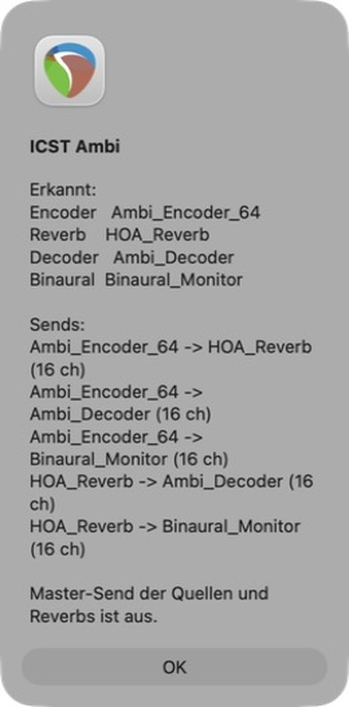
| RolleRole | Erkannt anDetected by | Sendet anSends to |
|---|---|---|
| Quelle (Player, Encoder, AmbiGran)Source (player, encoder, AmbiGran) | AmbiEncoder, AmbiGran oder „Player“ im NamenAmbiEncoder, AmbiGran or “Player” in the name | alle Reverbs, Decoder und Binaural-Spurenall reverbs, decoders and binaural tracks |
| ReverbReverb | AmbiIRVerb | Decoder und Binauraldecoder and binaural |
| DecoderDecoder | AmbiDecoder | (Ziel)(target) |
| BinauralBinaural | BinauralDecoder (IEM), dearVR | (Ziel)(target) |
Alle Sends laufen mit 16 Kanälen (bzw. der kleineren Kanalzahl beider Spuren). Der Master-Send von Quellen und Reverb wird ausgeschaltet. Alte Sends zu denselben Zielen werden vorher entfernt, Auto-Route lässt sich beliebig oft ausführen.All sends use 16 channels (or the smaller channel count of the two tracks). The master send of sources and reverb is switched off. Old sends to the same targets are removed first, so you can run Auto-Route as often as you like.
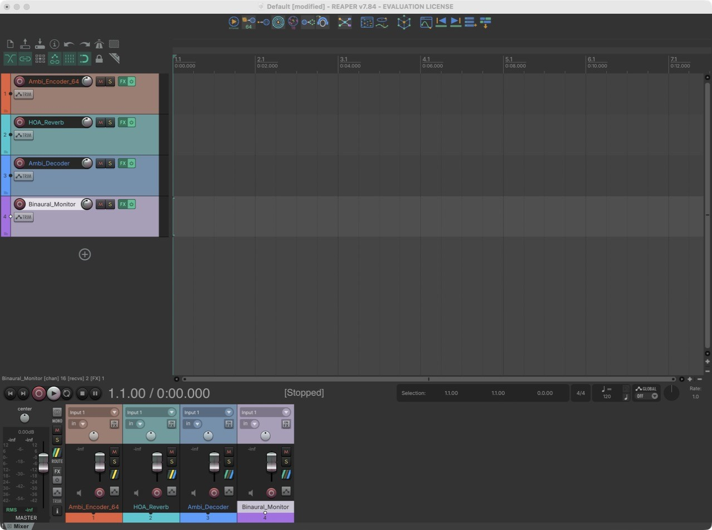
5. Animator-Workflow (Buttons 13–17)5. Animator workflow (buttons 13–17)
Die Regionen deines Stücks geben dem Animator Choreographer die Abschnitte vor: Regionen in REAPER, CSV exportieren, in der App importieren, Encoder-Spuren anlegen.The regions of your piece define the sections for the Animator Choreographer: regions in REAPER, export CSV, import in the app, create encoder tracks.
Schritt 1: Regionen setzenStep 1: set regions
Pro Abschnitt eine Region (Zeitauswahl, dann Shift+R) mit Namen, z. B. T01_kreis-horizontal. Lücken bleiben als Pausen erhalten.One region per section (time selection, then Shift+R) with a name, e.g. T01_kreis-horizontal. Gaps are kept as pauses.
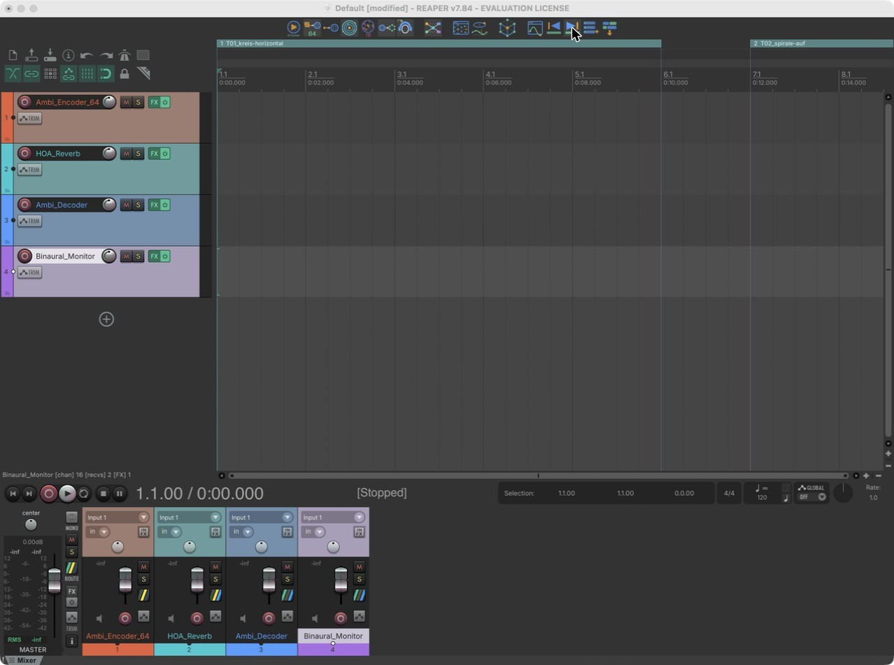
Schritt 2: CSV exportieren (Button 17)Step 2: export CSV (button 17)
CSV-Export klicken. Eine Konsole meldet Pfad und Anzahl der Einträge. Die Datei heißt Animator_<Projekt>_regions_markers.csv und liegt im Projektordner (ungespeichert: in REAPER Media). Spalten: type, index, name, start_s, end_s, length_s, Sekunden mit Dezimalpunkt.Click CSV Export. A console reports path and number of entries. The file is called Animator_<project>_regions_markers.csv and sits in the project folder (unsaved project: in REAPER Media). Columns: type, index, name, start_s, end_s, length_s, seconds with a decimal point.
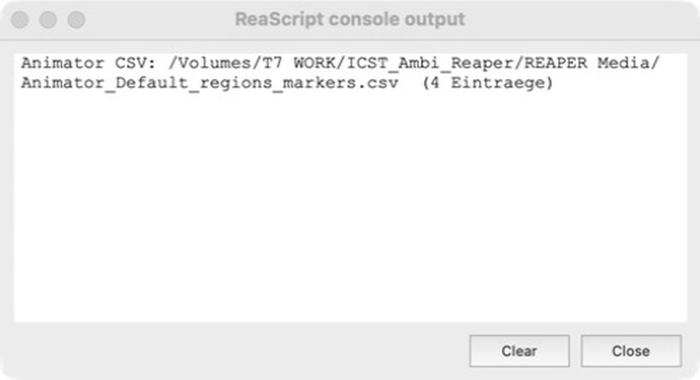
Schritt 3: In der App importieren (Button 13)Step 3: import in the app (button 13)
- Animator öffnen (Button 13) klicken.Click Open Animator (button 13).
- Im Tab Form auf Import regions (CSV) klicken und die CSV wählen.In the Form tab click Import regions (CSV) and choose the CSV file.
- Abschnitte erscheinen mit Namen und Dauer, Lücken als
(gap).The sections appear with names and durations; gaps show up as(gap).
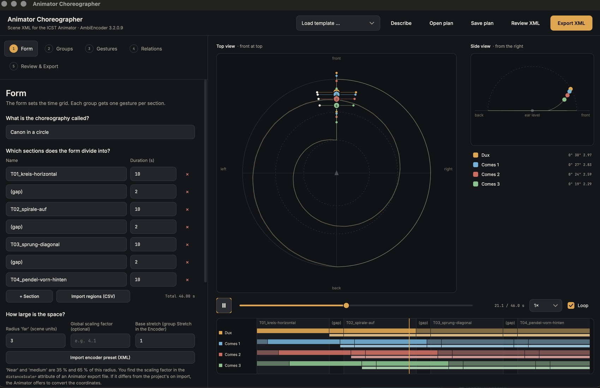
Szenen-XML laden und weiterbearbeitenLoad and keep editing a scene XML
- Klappe oben Load template … auf und wähle Import scene XML …. Wähle eine Szenen-XML des Animators.Open Load template … at the top and choose Import scene XML …. Pick an Animator scene XML.
- Mit Begleitdatei: Beim Export legt die App neben die XML eine Datei
<Name>.choreo.json. Liegt sie daneben, öffnet sich der Plan exakt und ist voll bearbeitbar.With a companion file: On export the app writes a file<name>.choreo.jsonnext to the XML. If it is there, the plan opens exactly and is fully editable. - Ohne Begleitdatei (ältere oder fremde XML): Die App rechnet die Clips näherungsweise in Gesten zurück. Abschnittsnamen kommen aus den Clip-Namen (z. B.
Exposition: Circle), sonst aus den Zeitgrenzen. Beziehungen wie Kanon oder Spiegel sind nicht mehr erkennbar; alle Gruppen werden als frei übernommen. Ein Hinweis nennt, wie viele Clips übernommen wurden. Die Vorschau bitte prüfen.Without a companion file (older or foreign XML): the app converts the clips back into gestures approximately. Section names come from the clip names (e.g.Exposition: Circle), otherwise from the time boundaries. Relations such as canon or mirror can no longer be recognized; all groups are imported as independent. A message tells how many clips were converted. Please check the preview. - Review XML zeigt eine Szene nur zur Ansicht, ohne sie in einen Plan umzuwandeln.Review XML only displays a scene for viewing, without converting it into a plan.
Schritt 4: Encoder-Spuren anlegen (Button 16)Step 4: create encoder tracks (button 16)
- Encoder-Spuren (Button 16) klicken.Click Encoder Tracks (button 16).
- Anzahl (1 bis 64, Standard 8) und Ordnung (1, 3, 5 oder 7, Standard 3) eingeben, bestätigen.Enter the number (1 to 64, default 8) and the order (1, 3, 5 or 7, default 3), then confirm.
- Es entstehen orange Spuren
Encoder_01,Encoder_02… mit AmbiEncoder_64, je 4, 16, 36 oder 64 Kanäle. Nummern werden fortgesetzt.You get orange tracksEncoder_01,Encoder_02… with AmbiEncoder_64, each with 4, 16, 36 or 64 channels. Numbering continues.
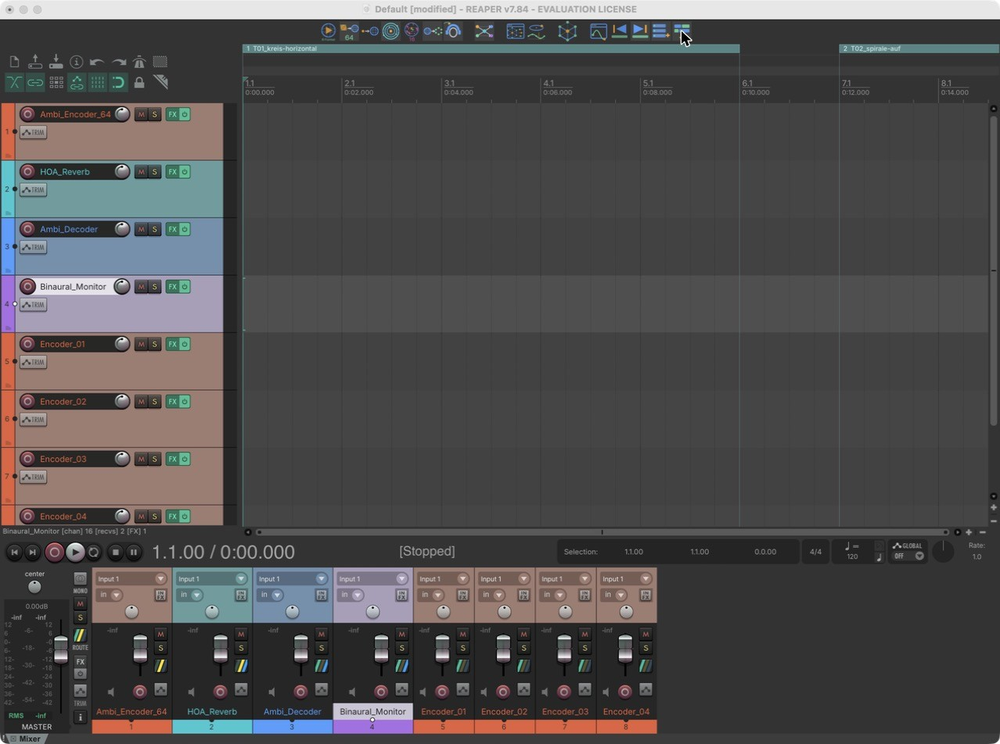
Navigation (Buttons 14 und 15)Navigation (buttons 14 and 15)
Vorherige und Nächste Region springen zum Anfang der Regionen. Marker zählen nicht.Previous and Next Region jump to the start of the regions. Markers do not count.
6. Bewegung (Buttons 10–12)6. Motion (buttons 10–12)
Spat Motion Automation (Button 11)Spat Motion Automation (button 11)
- Encoder-Spur wählen, z. B.
Encoder_01.Select the encoder track, e.g.Encoder_01. - Eine Zeitauswahl über den Abschnitt setzen. Ohne Zeitauswahl erscheint diese Meldung:Set a time selection over the section. Without it you get this message:
- Spat Motion Automation klicken und die Parameter einstellen:Click Spat Motion Automation and set the parameters:
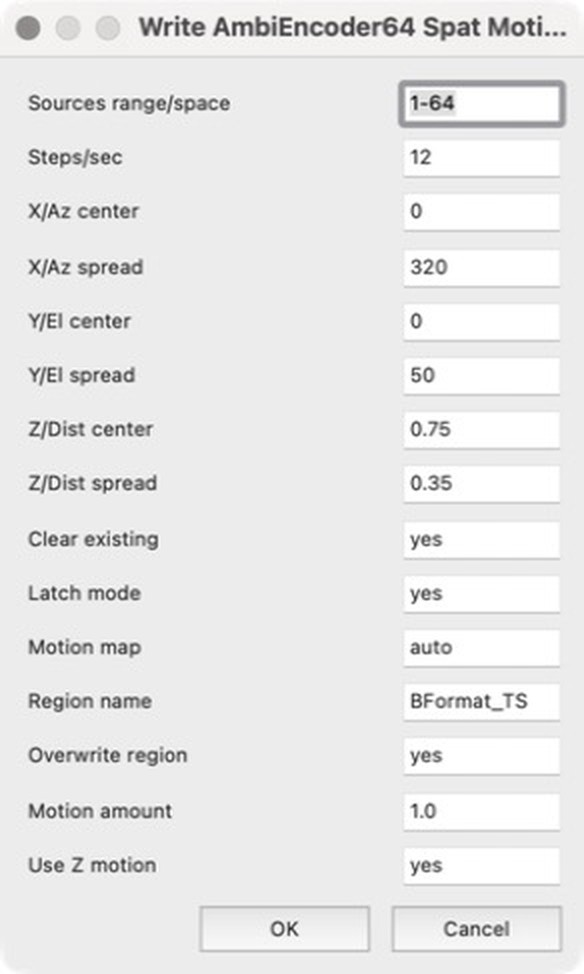
| FeldField | BedeutungMeaning |
|---|---|
| Sources range/space | Welche Quellen, z. B. 1-4 oder 1-64Which sources, e.g. 1-4 or 1-64 |
| Steps/sec | Automationspunkte pro SekundeAutomation points per second |
| X/Az, Y/El, Z/Dist | Mitte und Ausdehnung der BewegungCenter and extent of the motion |
| Clear existing | Alte Automation im Bereich löschenDelete old automation in the range |
| Latch mode | Automation-Modus Latch setzenSet the automation mode to Latch |
| Region name | Name der angelegten oder aktualisierten RegionName of the region that is created or updated |
| Motion amount | Stärke der BewegungStrength of the motion |
Mit OK nennt ein Bericht Spur, Plugin, Anzahl der Envelopes und geschriebene Punkte. Die Automation erscheint als Envelopes unter der Spur.After OK a report names track, plugin, number of envelopes and points written. The automation appears as envelopes under the track.
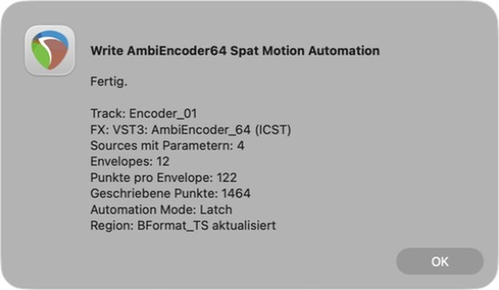
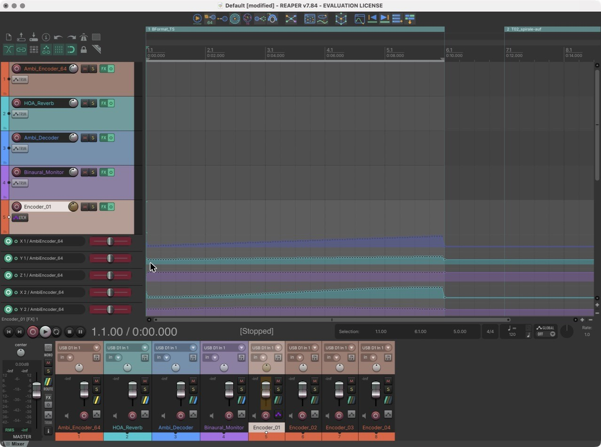
Achtung: Heißt die Region schon anders (z. B. T01_…), wird sie mit dem Namen aus Region name überschrieben. Dort den gewünschten Namen eintragen oder Overwrite region auf no stellen.Note: If the region has a different name (e.g. T01_…) it is overwritten with the name from Region name. Enter the name you want there or set Overwrite region to no.
Motion Map GUI (Button 10)Motion Map GUI (button 10)
Im Raster weist du jeder Quelle eine Bewegungsform zu: Linie, Bogen, Kreis, Spirale, Lissajous u. a. Die Vorschau zeigt alle Bahnen. Write Automation + Region schreibt die Automation über die Zeitauswahl.In the grid you assign a motion shape to each source: line, arc, circle, spiral, Lissajous and more. The preview shows all trajectories. Write Automation + Region writes the automation over the time selection.
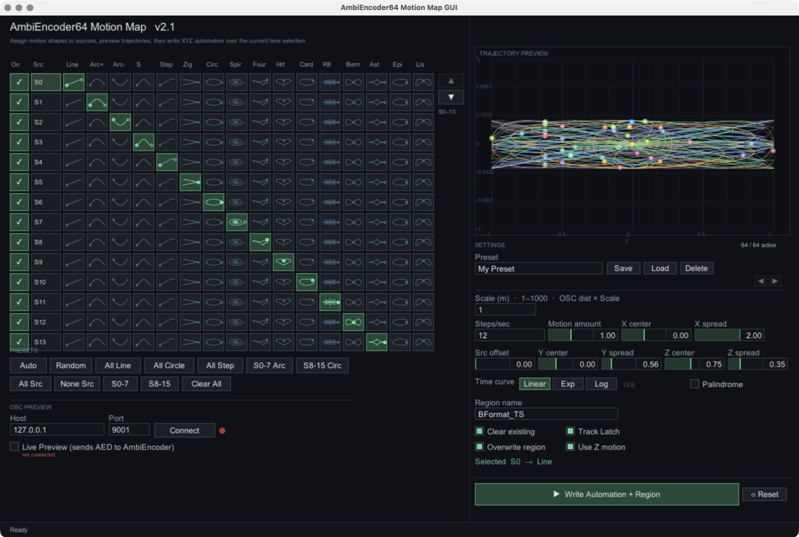
- Auto, Random, All Circle u. a. belegen alle Quellen auf einmal.Auto, Random, All Circle and others fill all sources at once.
- Scale, Motion amount und Spread-Regler bestimmen Größe und Intensität.Scale, Motion amount and the spread sliders set size and intensity.
- Live Preview sendet die Position per OSC (127.0.0.1, Port 9001) an den AmbiEncoder.Live Preview sends the position via OSC (127.0.0.1, port 9001) to the AmbiEncoder.
Kristall Motion Map (Button 12)Kristall Motion Map (button 12)
Bewegt Quellen als Kristallgitter (kubisch, hexagonal u. a.). Gitter und Instanzen wählen, mit Play starten, per OSC (Port 9001) verbinden.Moves sources as a crystal lattice (cubic, hexagonal and others). Choose lattice and instances, start with Play, connect via OSC (port 9001).
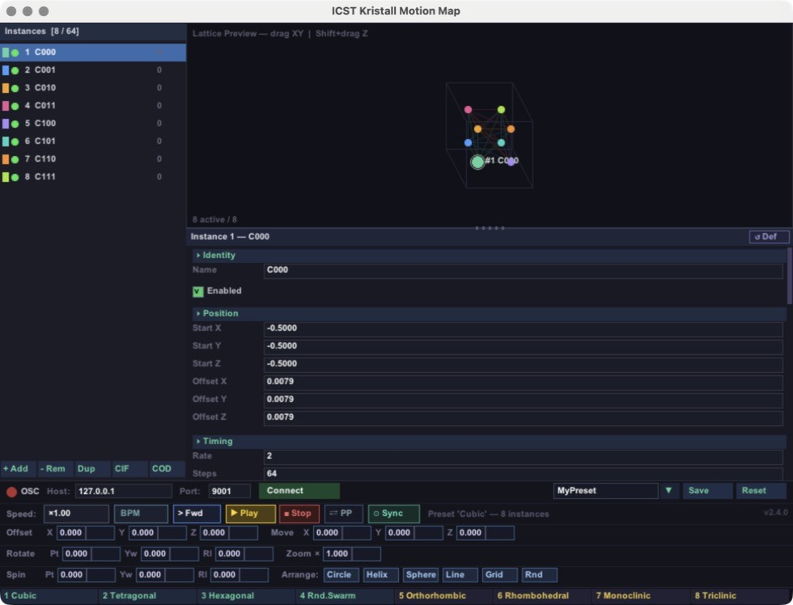
- Die Presets unten (1 Cubic … 8 Triclinic) laden Gitterformen.The presets at the bottom (1 Cubic … 8 Triclinic) load lattice shapes.
- Arrange (Circle, Helix, Sphere …) ordnet die Instanzen neu an.Arrange (Circle, Helix, Sphere …) rearranges the instances.
7. AmbiGran 16: Granulator für Ambisonics7. AmbiGran 16: granulator for Ambisonics
AmbiGran 16 zerlegt ein 16-kanaliges Ambisonics-Signal (3. Ordnung, ACN/SN3D) in kurze Körner und setzt sie neu zusammen. Der Algorithmus ist eine Portierung des bbdmi_multi_granulator des BBDMI-Teams. Das Plug-in liegt als VST3 in Effects/VST3 und wird mit Button 6 auf einer neuen Spur eingesetzt.AmbiGran 16 cuts a 16-channel Ambisonics signal (3rd order, ACN/SN3D) into short grains and reassembles them. The algorithm is a port of the bbdmi_multi_granulator by the BBDMI team. The plug-in is a VST3 in Effects/VST3 and is inserted on a new track with button 6.
EinsetzenSetup
- Button 6 klicken: es entsteht die pinke Spur
AmbiGran_16mit 16 Kanälen.Click button 6: this creates the pink trackAmbiGran_16with 16 channels. - Das Signal muss 16 Kanäle in ACN-Reihenfolge liefern (Kanal 1 = W). Quelle ist ein Encoder, ein B-Format-Player oder eine Audiodatei mit 16 Kanälen.The signal must deliver 16 channels in ACN order (channel 1 = W). The source is an encoder, a B-format player or a 16-channel audio file.
- Hinter AmbiGran 16 folgen Decoder oder Binaural. Auto-Route (Button 9) erkennt die Spur und verbindet sie.AmbiGran 16 is followed by a decoder or binaural. Auto-Route (button 9) detects the track and connects it.
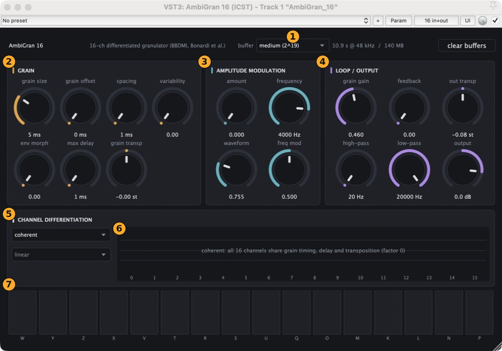
Bereiche der OberflächeAreas of the interface
| BereichArea | FunktionFunction |
|---|---|
| KopfzeileHeader | Puffergrösse mit Anzeige von Kapazität und Speicherbedarf; clear buffers löscht den Verzögerungspuffer.Buffer size with capacity and memory display; clear buffers empties the delay buffer. |
| Grain | Korngrösse, Offset, Abstand, Variabilität, Hüllkurvenform, Maximalverzögerung, Transposition der Körner.Grain size, offset, spacing, variability, envelope shape, maximum delay, grain transposition. |
| Amplitude Modulation | Tiefe, Frequenz, Wellenform und Frequenzverlauf der Amplitudenmodulation über das Korn.Depth, frequency, waveform and frequency curve of the amplitude modulation across the grain. |
| Loop / Output | Kornpegel, Rückkopplung, Transposition des Ausgangs, Hoch- und Tiefpass, Ausgangspegel.Grain level, feedback, output transposition, high-pass and low-pass, output level. |
| Channel Differentiation | Kanalmodus und Verteilungskurve (siehe unten).Channel mode and distribution curve (see below). |
| VerteilungsansichtDistribution view | Zeigt den Faktor, den jeder der 16 Kanäle aus der Kurve erhält.Shows the factor each of the 16 channels receives from the curve. |
| KanalpegelChannel levels | Ausgangspegel der 16 Kanäle, beschriftet nach ACN.Output levels of the 16 channels, labelled by ACN. |
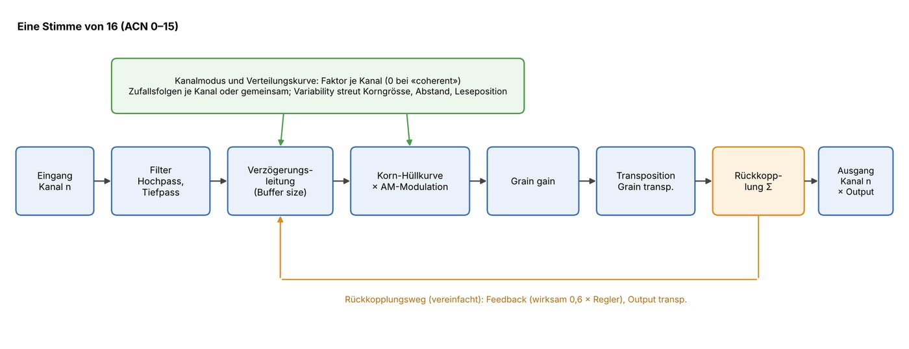
KanalmodusChannel mode
- coherent: Alle 16 Kanäle erfahren dieselbe Verarbeitung. Die Richtung der Schallquelle bleibt erhalten (gemessen: Richtungsschätzung aus der ersten Ordnung).coherent: all 16 channels receive the same processing. The direction of the sound source is preserved (measured: direction estimate from the first order).
- per channel: Jeder Kanal wird unabhängig granuliert. Die Kanäle driften auseinander, das Klangbild wird diffus.per channel: each channel is granulated independently. The channels drift apart and the sound image becomes diffuse.
- per order: Die Kanäle teilen sich die Verarbeitung nach Ambisonics-Ordnung (ACN-Index). Dafür muss die Kanalreihenfolge ACN sein, nicht FuMa.per order: the channels share the processing by Ambisonics order (ACN index). The channel order must be ACN, not FuMa.
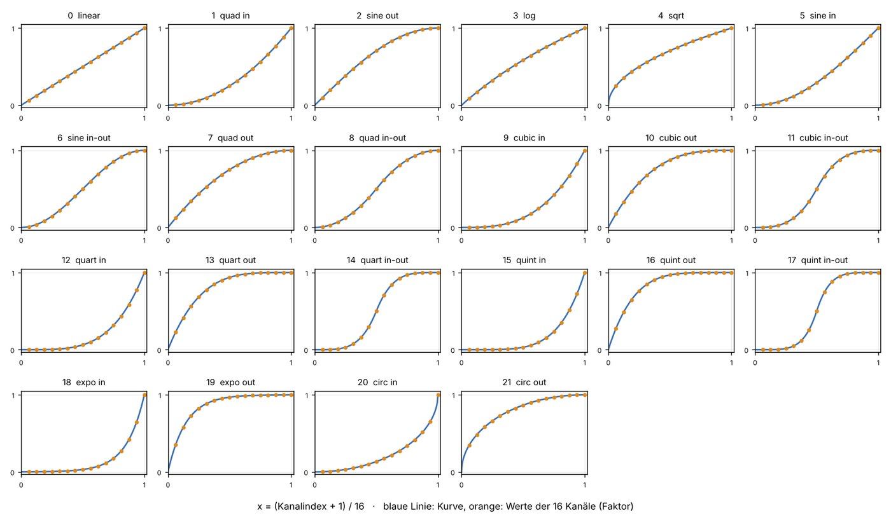
Startwerte zum AusprobierenStarting values to try
Korngrösse 80 ms, Abstand 100 ms, Maximalverzögerung 500 ms, Variabilität 0. Danach Variabilität und Kanalmodus schrittweise ändern. Der Puffer muss mindestens so gross sein wie die Maximalverzögerung; grosse Puffer brauchen entsprechend Arbeitsspeicher.Grain size 80 ms, spacing 100 ms, maximum delay 500 ms, variability 0. Then change variability and channel mode step by step. The buffer must be at least as large as the maximum delay; large buffers need correspondingly more memory.
Installation und LizenzInstallation and licence
- Das mitgelieferte VST3 ist ein Universal-Binary (Apple Silicon und Intel) für macOS 12.0 oder neuer. Es ist nur ad-hoc signiert;
run-me-before-install.commandentfernt die Quarantäne-Markierung.The bundled VST3 is a universal binary (Apple Silicon and Intel) for macOS 12.0 or later. It is only ad-hoc signed;run-me-before-install.commandremoves the quarantine flag. - AmbiGran 16 enthält Faust-Bibliotheken (u. a. LGPL) und nutzt JUCE (AGPLv3 oder kommerziell). Die Lizenz von AmbiGran 16 selbst ist noch nicht festgelegt; Einzelheiten in
THIRD_PARTY_NOTICES.mdim Projektordner.AmbiGran 16 contains Faust libraries (among others LGPL) and uses JUCE (AGPLv3 or commercial). The licence of AmbiGran 16 itself has not been fixed yet; details inTHIRD_PARTY_NOTICES.mdin the project folder.
8. AmbiIRVerb: Faltungshall für Ambisonics (Button 5)8. AmbiIRVerb: convolution reverb for Ambisonics (button 5)
AmbiIRVerb verteilt eine Stereo-Impulsantwort auf bis zu zwölf virtuelle Quellen rund um den Hörer und faltet das Eingangssignal mit je einer leicht veränderten Version. Das Ergebnis ist ein räumlich diffuser Ambisonics-Nachhall. Das Plug-in liegt als VST3 in Effects/VST3. Button 5 (HOA Reverb) legt dafür die Spur HOA_Reverb an.AmbiIRVerb distributes a stereo impulse response over up to twelve virtual sources around the listener and convolves the input signal with a slightly different version of it for each source. The result is a spatially diffuse Ambisonics reverb. The plug-in is a VST3 in Effects/VST3. Button 5 (HOA Reverb) creates the track HOA_Reverb for it.
Herkunft, Urheber und ZusammenarbeitProvenance, author and collaboration
AmbiIRVerb (nach IRidesce) beruht auf IRidesce von Eli Stine, ES MediaWorks (Sonotopes I – Crystal Wave Series). Die Regler tragen dieselben Namen wie in dessen Beschreibung. Die Umsetzung als JUCE-VST3 entstand in Zusammenarbeit mit dem ICST, Institute for Computer Music and Sound Technology, ZHdK. Code und die mitgelieferten Impulsantworten im Ordner Data/IRidesce (u. a. OperaHouse, L480ConcertHall, EMT140Plate) werden mit Erlaubnis von ES MediaWorks verwendet und weitergegeben.AmbiIRVerb (after IRidesce) is based on IRidesce by Eli Stine, ES MediaWorks (Sonotopes I – Crystal Wave Series). The controls carry the same names as in its description. The implementation as a JUCE VST3 was made in collaboration with the ICST, Institute for Computer Music and Sound Technology, ZHdK. Code and the bundled impulse responses in the folder Data/IRidesce (among others OperaHouse, L480ConcertHall, EMT140Plate) are used and distributed with the permission of ES MediaWorks.
Das Signet und der Hinweis „ES MediaWorks“ erscheinen links unten in der Oberfläche des Plug-ins.The signet and the note “ES MediaWorks” appear at the bottom left of the plug-in interface.
EinsetzenSetup
- Button 5 klicken oder AmbiIRVerb über FX auf einer Spur mit mindestens vier Kanälen einfügen. Die Ordnung folgt der Kanalzahl: 4, 9, 16, 25, 36, 49 oder 64 Kanäle entsprechen der 1. bis 7. Ordnung.Click button 5 or insert AmbiIRVerb via FX on a track with at least four channels. The order follows the channel count: 4, 9, 16, 25, 36, 49 or 64 channels correspond to order 1 to 7.
- Mit dem Knopf IR eine Stereo-Impulsantwort laden. Die Zeile daneben zeigt Dateiname, Kanäle, Abtastrate, Länge, Quellenzahl und Ordnung.Load a stereo impulse response with the IR button. The line next to it shows file name, channels, sample rate, length, source count and order.
- Mit dem Knopf IR Library öffnet sich ein Aufklappmenü mit den Ordnern und Impulsantworten aus
Data/IRidescedes REAPER-Ressourcenordners (z. B. OperaHouse, L480ConcertHall, EMT140Plate). Ein Klick lädt die Datei. Das Plug-in sucht den Ordner ausgehend vom REAPER-Programm und von der Plug-in-Datei nach oben; fehlt er, nimmt es den gemeinsamen OrdnerICST/IRidesce(macOS/Library/Application Support/ICST/IRidesce, WindowsC:\ProgramData\ICST\IRidesce), den die Installer anlegen. Ist auch dieser nicht vorhanden, erscheint ein Hinweis.The IR Library button opens a drop-down menu with the folders and impulse responses fromData/IRidescein the REAPER resource folder (e.g. OperaHouse, L480ConcertHall, EMT140Plate). One click loads the file. The plug-in searches upwards from the REAPER application and from the plug-in file; if the folder is missing, it uses the shared folderICST/IRidesce(macOS/Library/Application Support/ICST/IRidesce, WindowsC:\ProgramData\ICST\IRidesce) that the installers create. If that is missing too, a message appears. - Die Hallspur über Sends mit den Quellen und dem Decoder verbinden (Button 9, Auto-Route erledigt das).Connect the reverb track to the sources and the decoder via sends (button 9, Auto-Route does this).
- Der Dateipfad der Impulsantwort wird absolut im Projekt gespeichert. Wird die Datei verschoben, muss sie neu gewählt werden.The file path of the impulse response is stored as an absolute path in the project. If the file is moved it has to be chosen again.
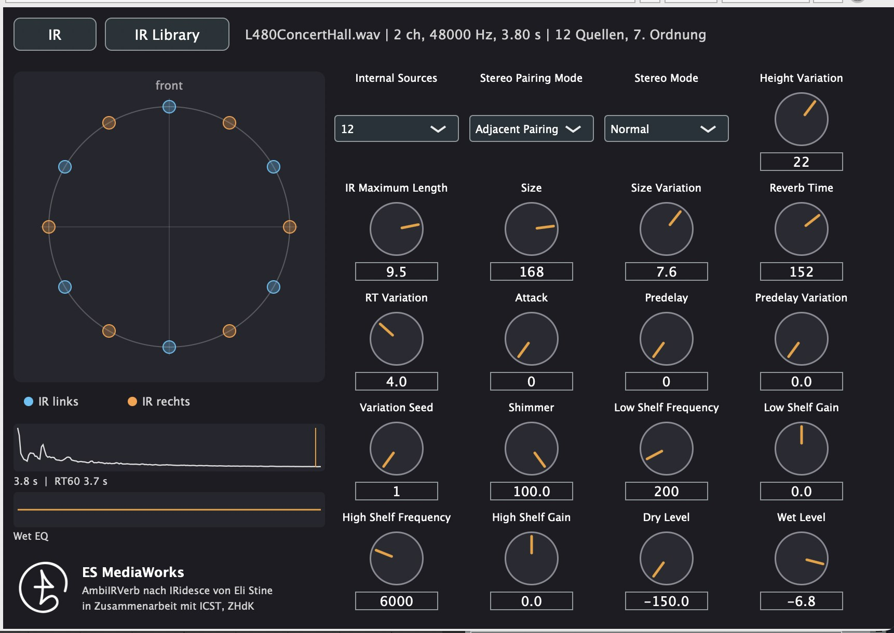
AnzeigenDisplays
- Quellenfeld: zeigt die virtuellen Quellen um den Hörer (blau: IR links, orange: IR rechts).Source field: shows the virtual sources around the listener (blue: IR left, orange: IR right).
- Wellenform: Hüllkurve der geladenen IR (Wurzelskalierung). Die orange Marke zeigt die Nachhallzeit RT60; die Zeile darunter nennt Länge und RT60.Waveform: envelope of the loaded IR (square-root scaling). The orange marker shows the reverberation time RT60; the line below gives length and RT60.
- Wet EQ: Frequenzgang der beiden Shelving-Filter (20 Hz bis 20 kHz, ±16 dB). Die Linie ist flach, solange beide Gains auf 0 dB stehen.Wet EQ: frequency response of the two shelving filters (20 Hz to 20 kHz, ±16 dB). The line is flat as long as both gains are at 0 dB.
ParameterParameters
| ReglerControl | StartwertDefault | WirkungEffect |
|---|---|---|
| Internal Sources | 8 | Zahl der virtuellen Quellen (4 bis 12)Number of virtual sources (4 to 12) |
| Stereo Pairing Mode | Adjacent Pairing | Adjacent Pairing: linke und rechte IR wechseln sich bei benachbarten Quellen ab. Wide L/R Pairing: gegenüberliegende Quellen erhalten L und R.Adjacent Pairing: left and right IR alternate on neighbouring sources. Wide L/R Pairing: opposite sources receive L and R. |
| Stereo Mode | Normal | Swap vertauscht links und rechts der IR.Swap exchanges left and right of the IR. |
| Height Variation | 12 | Streuung der Quellen in der Höhe.Spread of the sources in elevation. |
| IR Maximum Length | 8.0 | Maximale Länge der verwendeten IR in Sekunden.Maximum length of the IR used, in seconds. |
| Size / Size Variation | 100 / 4.0 | Dehnung der IR und deren Streuung zwischen den Quellen.Stretch of the IR and its spread between the sources. |
| Reverb Time / RT Variation | 100 / 4.0 | Nachhallzeit und deren Streuung zwischen den Quellen.Reverb time and its spread between the sources. |
| Attack | 0 | Einschwingen des Nachhalls.Attack of the reverb. |
| Predelay / Predelay Variation | 0 / 0.0 | Vorverzögerung und deren Streuung.Predelay and its spread. |
| Variation Seed | 1 | Startwert der Zufallsstreuung; derselbe Wert liefert dasselbe Ergebnis.Starting value of the random spread; the same value gives the same result. |
| Shimmer | 0.0 | Mischt je Quelle ein breitbandiges, der IR-Hüllkurve folgendes Rauschen bei (der Anteil wächst überproportional mit dem Wert). Derselbe Wert mit demselben Variation Seed liefert dasselbe Ergebnis.Adds, per source, a broadband noise that follows the IR envelope (the amount grows more than linearly with the value). The same value with the same variation seed gives the same result. |
| Low Shelf Frequency / Gain | 200 Hz / 0 dB | Tiefen-Shelving-Filter.Low shelving filter. |
| High Shelf Frequency / Gain | 6000 Hz / 0 dB | Höhen-Shelving-Filter.High shelving filter. |
| Dry Level / Wet Level | 0 dB / −6 dB | Pegel von Direktsignal und Hall.Level of the direct signal and the reverb. |
EmpfehlungenBest practice
- Als Send-Effekt: Dry Level ganz nach links auf −150 dB stellen (entspricht „aus“, wie im Original), damit die Hallspur nur den Hallanteil trägt. Das Direktsignal muss dann über die Sends der Quellspuren zum Decoder laufen.As a send effect: set Dry Level fully left to −150 dB (this means “off”, as in the original) so that the reverb track carries only the wet signal. The direct signal then has to reach the decoder through the sends of the source tracks.
- Wet Level hörend einstellen. Die Pegelstruktur folgt dem Original IRidesce (feste Skalierung nach Quellenzahl, +14 dB auf Wet); im Rechenmodell liegt der Hallanteil bei Wet 0 dB im Mittel etwa 4,5 dB über dem Direktsignal. Am laufenden Plug-in wurde der Pegel nicht gemessen.Set Wet Level by ear. The level structure follows the original IRidesce (fixed scaling by source count, +14 dB on wet); in the calculation model the reverb part at wet 0 dB is on average about 4.5 dB above the direct signal. The level of the running plug-in was not measured.
- Size, Reverb Time, Attack, Predelay, Variation Seed und Internal Sources lösen einen Neuaufbau der Impulsantworten aus. Nicht schnell automatisieren.Size, Reverb Time, Attack, Predelay, Variation Seed and Internal Sources trigger a rebuild of the impulse responses. Do not automate them quickly.
- Mit grossen Ordnungen und vielen Quellen steigt die Rechenlast; bei vielen Hallspuren IR Maximum Length und Internal Sources klein halten.CPU load rises with high orders and many sources; with many reverb tracks keep IR Maximum Length and Internal Sources small.
GrenzenLimitations
Das Bild stammt aus REAPER (macOS) mit einer 64-Kanal-Spur. Nicht geprüft sind Kanalzahlen zwischen den Standardwerten in verschiedenen Hosts, das Hörergebnis und die Messung des Pegels. Die Richtungsabhängigkeit des Pegels hängt von Ordnung, Quellenzahl und Paarung ab.The image comes from REAPER (macOS) with a 64-channel track. Not verified: channel counts between the standard values in different hosts, the audible result and a measurement of the level. The directional dependence of the level varies with order, source count and pairing.
LizenzenLicences
| KomponenteComponent | LizenzLicence |
|---|---|
| JUCE 8.0.8 | AGPLv3 oder kommerziellAGPLv3 or commercial |
| Steinberg VST3 SDK 3.7.12 | Steinberg-Lizenz oder GPLv3Steinberg licence or GPLv3 |
| libFLAC, Ogg Vorbis | BSD (Xiph)BSD (Xiph) |
| AmbiIRVerb | Lizenz noch nicht festgelegtlicence not yet decided |
9. AmbiIRLayers: Faltungshall für Ambisonics9. AmbiIRLayers: convolution reverb for Ambisonics
AmbiIRLayers erzeugt aus einer Stereo-Impulsantwort einen Ambisonics-Faltungshall (1. bis 7. Ordnung, ACN/SN3D). Der Hall besteht aus drei Schichten (Far, Mid, Near). Jede Schicht verteilt die Impulsantwort auf eine Anzahl virtueller Quellen rund um den Hörer; jede Quelle erhält eine eigene, leicht veränderte Impulsantwort. Das Ergebnis ist ein räumlich diffuser Nachhall ohne feste Richtung.AmbiIRLayers builds an Ambisonics convolution reverb (1st to 7th order, ACN/SN3D) from a stereo impulse response. The reverb consists of three layers (Far, Mid, Near). Each layer distributes the impulse response over a number of virtual sources around the listener; each source receives its own, slightly modified impulse response. The result is a spatially diffuse reverb tail without a fixed direction.
Herkunft und LizenzProvenance and licence
Das Verfahren (Aufteilung der Stereo-Impulsantwort auf virtuelle Quellen mit Variationen von Grösse, Nachhallzeit, Vorverzögerung, Shimmer und Shelving-EQ) stammt vom Konzept IRidesce von Eli Stine, ES MediaWorks (Sonotopes I – Crystal Wave Series) und wurde in Zusammenarbeit mit dem ICST, ZHdK, als JUCE-VST3 umgesetzt (siehe Kapitel 8).The method (distributing a stereo impulse response over virtual sources with variations of size, reverb time, predelay, shimmer and shelving EQ) comes from the concept IRidesce by Eli Stine, ES MediaWorks (Sonotopes I – Crystal Wave Series) and was implemented as a JUCE VST3 in collaboration with the ICST, ZHdK (see chapter 8).
EinsetzenSetup
- AmbiIRLayers hat keinen Toolbar-Button, liegt aber als
AmbiIRLayers.vst3inEffects/VST3. Nach einem Update der Datei die VST-Liste neu scannen (REAPER: Einstellungen, Plug-ins, VST, Clear cache/Re-scan).AmbiIRLayers has no toolbar button but is included asAmbiIRLayers.vst3inEffects/VST3. After updating the file, rescan the VST list (REAPER: Preferences, Plug-ins, VST, Clear cache/Re-scan). - Eine Spur mit 4, 16, 36 oder 64 Kanälen anlegen (1., 3., 5. oder 7. Ordnung) und das Plug-in über FX einfügen.Create a track with 4, 16, 36 or 64 channels (order 1, 3, 5 or 7) and insert the plug-in via FX.
- Jede Schicht kann ihre eigene Impulsantwort haben: Schicht wählen (Far, Mid oder Near), dann mit dem Knopf IR eine Datei laden oder mit IR Library eine Impulsantwort aus
Data/IRidescewählen. Schichten ohne eigene IR übernehmen zunächst die zuerst geladene Datei. Unter dem Quellenfeld steht, welche IR jede Schicht verwendet. Für einen hörbaren Raumwechsel eignen sich z. B. ein grosser Raum für Far, ein mittlerer für Mid und ein kleiner Raum oder eine Platte für Near. Die Dateipfade werden absolut im Projekt gespeichert; wird eine Datei verschoben, muss sie neu gewählt werden.Each layer can have its own impulse response: select a layer (Far, Mid or Near), then load a file with the IR button or choose one fromData/IRidescewith IR Library. Layers without their own IR first take over the file loaded first. Below the source field you can see which IR each layer uses. For an audible change of space, use for example a large room for Far, a medium room for Mid and a small room or a plate for Near. The file paths are stored as absolute paths in the project; if a file is moved it has to be chosen again. - Der Button HOA Reverb der Toolbar legt weiterhin eine Spur mit dem einschichtigen
AmbiIRVerban, nicht mit AmbiIRLayers.The toolbar button HOA Reverb still creates a track with the single-layerAmbiIRVerb, not with AmbiIRLayers.
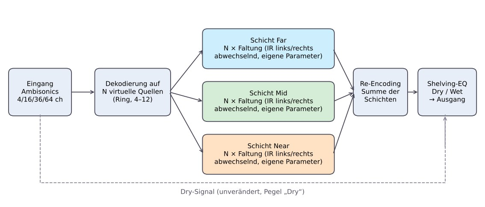
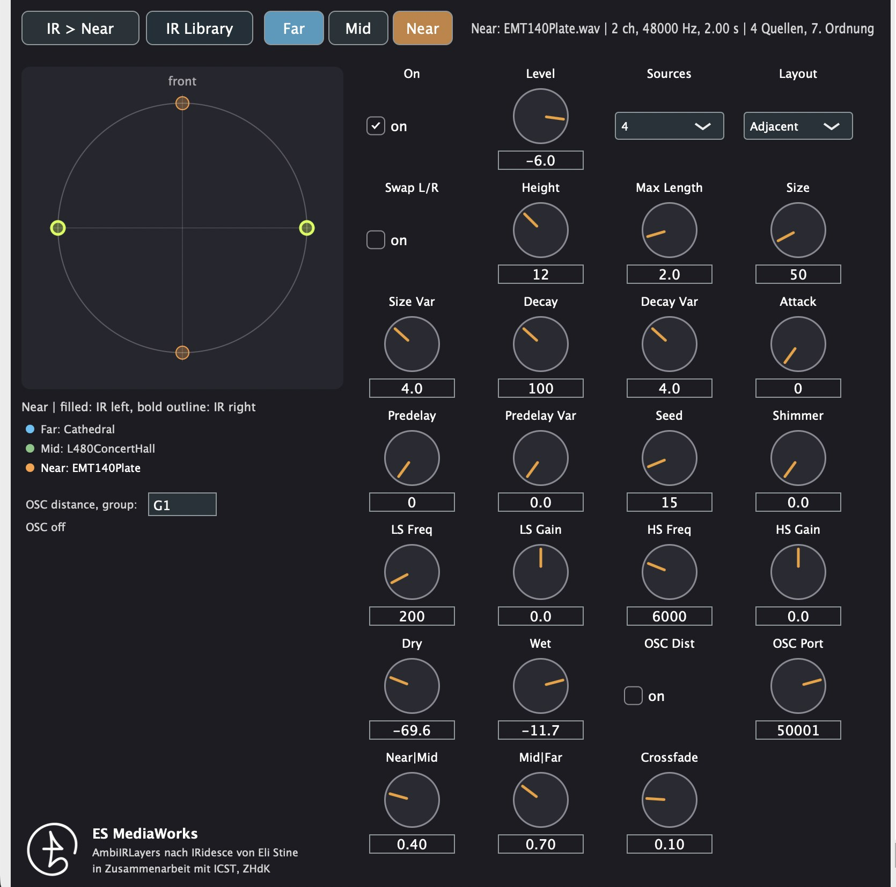
Distanzsteuerung per OSCDistance control via OSC
AmbiIRLayers kann die Pegel der drei Schichten aus der Distanz eines Gruppenpunkts des Encoders steuern: je weiter entfernt, desto mehr Far, je näher, desto mehr Near; dazwischen blendet das Plug-in gleichleistungsbezogen über (Sinus/Cosinus). Dazu empfängt es die OSC-Nachricht /icst/ambi/group/xyz mit den Argumenten "G1" x y z (Koordinaten −1 bis 1). Die Distanz ist √(x² + y² + z²).AmbiIRLayers can control the levels of the three layers from the distance of a group point of the encoder: the farther away, the more Far; the closer, the more Near; in between the plug-in crossfades with equal power (sine/cosine). It receives the OSC message /icst/ambi/group/xyz with the arguments "G1" x y z (coordinates −1 to 1). The distance is √(x² + y² + z²).
- OSC Dist einschalten, OSC Port wählen (Standard 50001) und links unter dem Quellenfeld die Gruppe eintragen (z. B.
G1).Switch OSC Dist on, choose the OSC Port (default 50001) and enter the group below the source field (e.g.G1). - Im Encoder das OSC-Ziel auf
127.0.0.1und diesen Port stellen. Ein Port kann nur von einem Programm belegt werden; läuft dort schon etwas anderes (OSC-Monitor, OSC FX Router), einen freien Port im Plug-in wählen und dorthin weiterleiten. Meldet das Plug-in „port busy“, ist der Port belegt.Set the OSC target in the encoder to127.0.0.1and this port. A port can be used by one program only; if something else is already using it (OSC monitor, OSC FX Router), choose a free port in the plug-in and forward to it. If the plug-in shows “port busy”, the port is taken. - Die Grenzen Near|Mid (Standard 0,4) und Mid|Far (Standard 0,7) und die halbe Breite der Überblendung Crossfade (Standard 0,1) bestimmen die Bereiche: Near ab 0,1 bis 0,3, Überblendung Near/Mid 0,3 bis 0,5, Mid 0,5 bis 0,6, Überblendung Mid/Far 0,6 bis 0,8, Far ab 0,8 bis 1,2 und darüber.The boundaries Near|Mid (default 0.4) and Mid|Far (default 0.7) and the half-width of the transition Crossfade (default 0.1) set the ranges: Near from 0.1 to 0.3, Near/Mid transition 0.3 to 0.5, Mid 0.5 to 0.6, Mid/Far transition 0.6 to 0.8, Far from 0.8 to 1.2 and beyond.
- Die Anzeige zeigt x, y, z, Distanz und die aktuellen Gewichte von Far, Mid und Near. Der Level-Regler jeder Schicht bleibt als Grundpegel wirksam; das Distanzgewicht wird daraufhin multipliziert. Bei ausgeschaltetem OSC Dist oder ohne eingehende Nachrichten wirken nur die Level-Regler.The display shows x, y, z, distance and the current weights of Far, Mid and Near. The Level control of each layer stays effective as the base level; the distance weight is multiplied onto it. With OSC Dist off, or without incoming messages, only the Level controls apply.
Ein Hall auf einer gemeinsamen Spur hat nur eine Distanz, nämlich die der gewählten Gruppe. Sollen einzelne Quellen verschiedene Distanzen haben, braucht jede ihren eigenen Hall oder eigene Sends.A reverb on a shared track has only one distance, that of the chosen group. If individual sources are to have different distances, each needs its own reverb or its own sends.
ParameterParameters
Die Regler gelten je Schicht (Far, Mid, Near). Startwerte:The controls apply per layer (Far, Mid, Near). Default values:
| ParameterParameter | Far | Mid | Near |
|---|---|---|---|
| PegelLevel | 0 dB | −3 dB | −6 dB |
| Anzahl QuellenSources | 12 | 8 | 4 |
| PaarungPairing | Wide | Adjacent | Adjacent |
| Maximale LängeMax length | 8 s | 4 s | 2 s |
| GrösseSize | 150 % | 80 % | 50 % |
| VorverzögerungPredelay | 30 ms | 5 ms | 0 ms |
| Seed | 1 | 8 | 15 |
Global: Low Shelf 200 Hz, High Shelf 6 kHz, Dry 0 dB, Wet −6 dB.Global: low shelf 200 Hz, high shelf 6 kHz, dry 0 dB, wet −6 dB.
- Grösse, Nachhallzeit, Attack, Vorverzögerung: formen die Impulsantwort jeder Quelle (Dehnung, Abklingkurve, Einschwingen, Vorlauf).Size, reverb time, attack, predelay: shape the impulse response of each source (stretch, decay curve, attack, lead time).
- Variationen und Seed: streuen diese Werte zwischen den Quellen; derselbe Seed liefert dasselbe Ergebnis.Variations and seed: spread these values between the sources; the same seed gives the same result.
- Shimmer: zusätzliche spektrale Variation der Quellen.Shimmer: additional spectral variation between the sources.
- Paarung: Adjacent koppelt benachbarte Quellen, Wide die gegenüberliegenden. Height verteilt Quellen auch in der Höhe.Pairing: Adjacent couples neighbouring sources, Wide couples opposite ones. Height also places sources at different elevations.
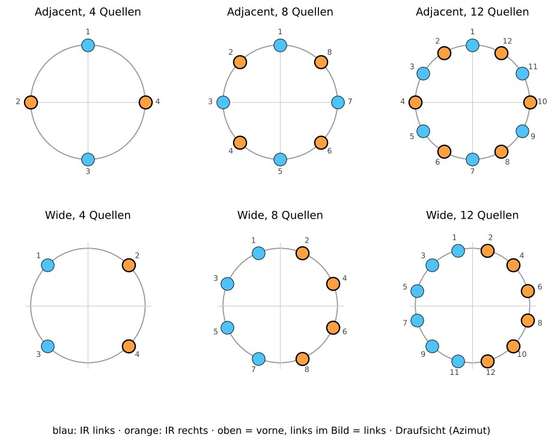
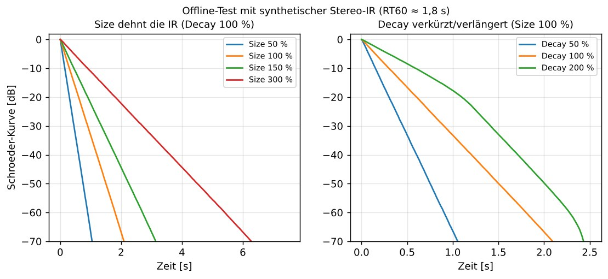
EmpfehlungenBest practice
- Als Send-Effekt betreiben: Dry auf −100 dB stellen, damit nur der Hallanteil auf der Hallspur liegt; das Direktsignal läuft über die Quellspur.Use it as a send effect: set dry to −100 dB so that the reverb track carries only the wet signal; the direct signal travels on the source track.
- Wet-Pegel prüfen: Im Rechenmodell ist der Wet-Anteil lauter als das Dry-Signal, deshalb der Startwert −6 dB.Check the wet level: in the calculation model the wet part is louder than the dry signal, hence the default of −6 dB.
- Grösse, Nachhallzeit, Attack, Vorverzögerung, Seed und Quellenzahl lösen einen Neuaufbau der Impulsantworten aus. Sie nicht schnell automatisieren.Size, reverb time, attack, predelay, seed and source count trigger a rebuild of the impulse responses. Do not automate them quickly.
- Pegel und EQ lassen sich dagegen ohne Neuaufbau verändern.Level and EQ, in contrast, can be changed without a rebuild.
- Die Faltung kostet Rechenzeit: Quellenzahl und maximale Länge klein halten, wenn das Projekt viele Hallspuren enthält.Convolution costs CPU: keep source count and maximum length small if the project contains many reverb tracks.
Tests und GrenzenTests and limitations
Geprüft wurde ein Python-Modell der Signalverarbeitung (Wirkung von Grösse, Nachhallzeit, Vorverzögerung und Attack sowie die Pegelverhältnisse). Das Plug-in selbst wurde in dieser Dokumentation nicht in REAPER gehört oder gemessen. Die Richtungsabhängigkeit des Pegels hängt von Ordnung, Quellenzahl und Paarung ab und ist nicht für alle Einstellungen gleichmässig.A Python model of the signal processing was checked (effect of size, reverb time, predelay and attack, and the level relations). The plug-in itself was not auditioned or measured in REAPER for this documentation. The directional dependence of the level varies with order, source count and pairing and is not uniform for all settings.
LizenzenLicences
| KomponenteComponent | LizenzLicence |
|---|---|
| JUCE 8.0.8 | AGPLv3 oder kommerziellAGPLv3 or commercial |
| Steinberg VST3 SDK 3.7.12 | Steinberg-Lizenz oder GPLv3Steinberg licence or GPLv3 |
| libFLAC, Ogg Vorbis | BSD (Xiph)BSD (Xiph) |
| AmbiIRLayers | Lizenz noch nicht festgelegtlicence not yet decided |
10. Tipps und Fehlersuche10. Tips and troubleshooting
| ProblemProblem | LösungSolution |
|---|---|
| Plugins werden auf einem anderen Mac nicht gefundenPlugins are not found on another Mac | run-me-before-install.command im Ordner ausführen (setzt den Plugin-Pfad neu), REAPER neu starten, VST-Liste neu scannen.Run run-me-before-install.command in the folder (resets the plugin path), restart REAPER, rescan the VST list. |
| Animator zeigt nicht „Import scene XML …“ im MenüAnimator shows no “Import scene XML …” in the menu | Eine ältere Kopie läuft noch. App beenden und über Button 13 neu starten.An older copy is still running. Quit the app and start it again with button 13. |
| Meldung „Plugin wurde nicht gefunden“Message “plugin not found” | VST-Liste neu scannen (Optionen > Einstellungen > Plug-ins > VST). REAPER muss aus dem Ordner ICST_Ambi_Reaper gestartet sein.Rescan the VST list (Options > Preferences > Plug-ins > VST). REAPER must be started from the ICST_Ambi_Reaper folder. |
| Spat: „Bitte zuerst eine Loop/Time Selection setzen“Spat: “set a loop/time selection first” | Zeitauswahl über den Abschnitt ziehen und erneut klicken.Drag a time selection over the section and click again. |
| Region wurde nach Spat umbenanntRegion renamed after Spat | Region name anpassen oder Overwrite region auf no.Adjust Region name or set Overwrite region to no. |
| AmbiGran landet nicht auf der gewünschten SpurAmbiGran does not land on the track you wanted | Der Button legt immer eine neue Spur an. Plugin bei Bedarf per Drag&Drop verschieben.The button always creates a new track. Move the plugin by drag and drop if needed. |
| Auto-Route findet eine Spur nichtAuto-Route does not find a track | Die Spur braucht ein erkennbares Plugin (AmbiEncoder, AmbiGran, AmbiIRVerb, AmbiDecoder, BinauralDecoder (IEM), dearVR) oder „Player“ im Namen.The track needs a recognizable plugin (AmbiEncoder, AmbiGran, AmbiIRVerb, AmbiDecoder, BinauralDecoder (IEM), dearVR) or “Player” in its name. |
| Doppelte Encoder-NamenDuplicate encoder names | Encoder-Spuren zählt weiter. Ist ein Name doppelt, Spur umbenennen.Encoder Tracks keeps counting. If a name is duplicated, rename the track. |
| Binaural mit mehr als 16 KanälenBinaural with more than 16 channels | Nur dearVR AMBI MICRO ist auf 16 Kanäle begrenzt. Der IEM BinauralDecoder (Standard) geht bis zur 7. Ordnung.Only dearVR AMBI MICRO is limited to 16 channels. The IEM BinauralDecoder (default) works up to 7th order. |
| Doku-Button öffnet nichtsDocs button opens nothing | Prüfe Docs/index.html und Docs/docs_url.txt (leer = lokale Doku).Check Docs/index.html and Docs/docs_url.txt (empty = local docs). |
Schneller AblaufQuick workflow
- Spuren anlegen (Buttons 1–8), dann Auto-Route.Create tracks (buttons 1–8), then Auto-Route.
- Regionen setzen, CSV-Export, in der App importieren.Set regions, CSV Export, import in the app.
- Encoder-Spuren anlegen, Zeitauswahl setzen, Spat Motion Automation oder Motion Map GUI.Create Encoder Tracks, set a time selection, then Spat Motion Automation or Motion Map GUI.